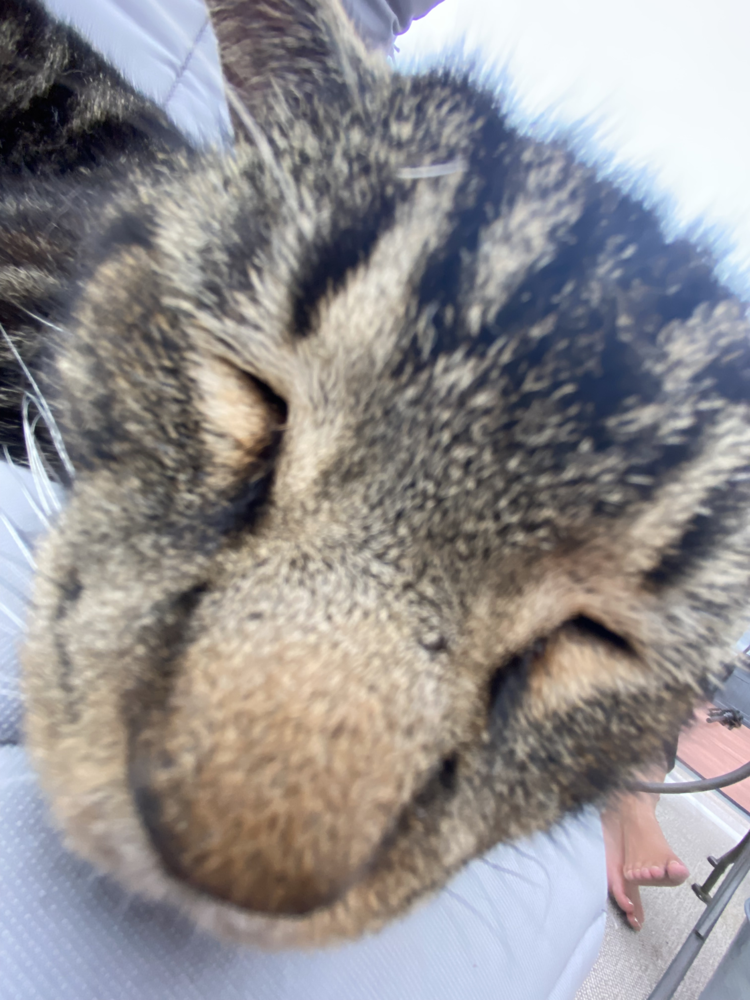

asking AI what they think of my mom's cats
I feed images of my mom's cat into AI. I used Google's Gemini because I don't pay for any LLMs and this one was free with image support.
dory


Q: what do you think of my cat? do you think my cat is cute? be nice!
Based on the image you sent, your cat looks very cute! It appears to be curled up on a blanket, fast asleep. Cats tend to have features that humans find endearing, big eyes, soft fur, and a small nose. These features are sometimes referred to as kinderschema, and trigger caregiving instincts in us.
There are many different breeds of cat, and all of them can be cute in their own way. The cat in the image appears to have some characteristics of a Munchkin cat, Scottish Fold, Ragdoll, Burmilla, or British Shorthair cat breed. These breeds tend to have short legs (Munchkin), folded ears (Scottish Fold), blue eyes (Ragdoll), silvery fur with green eyes (Burmilla), or a round face and thick fur (British Shorthair).
No matter what breed your cat is, it's clear that you care about it a lot. Cats can make great companions, and they can provide us with love and affection.
amelia
Q: what about this cat?
The cat in the image is a calico cat. Calico cats aren't a specific breed, but rather a coat pattern that can occur in many breeds of domestic cat [2]. The calico pattern consists of patches of black, orange, and white fur [2]. The cat in the image appears to be a domestic shorthair cat with a calico coat.
Calico cats are known for their spunky and assertive personalities [2]. They are also said to be sweet, loving, and loyal companions [2].
Overall, the cat in the image is a very cute calico cat with a classic tri-color coat.
larry
Q: do you think this image is funny?
The image you sent of a close-up of a cat with its eyes closed sleeping on a couch next to a person's feet could be considered funny for a few reasons.
Cats are known for sleeping in unusual positions. This image captures the cat fast asleep right next to the person's feet, which is a place some people might not expect a cat to want to sleep.
The cat appears very relaxed and comfortable. This can be humorous because it implies that the cat trusts the person completely and feels safe curling up next to them.
The image cuts off at the cat's head. This can add to the humor by leaving the viewer to imagine what the rest of the cat looks like.
Of course, humor is subjective, so what one person finds funny another person might not. However, the image you sent has some elements that are commonly found in funny pet pictures.